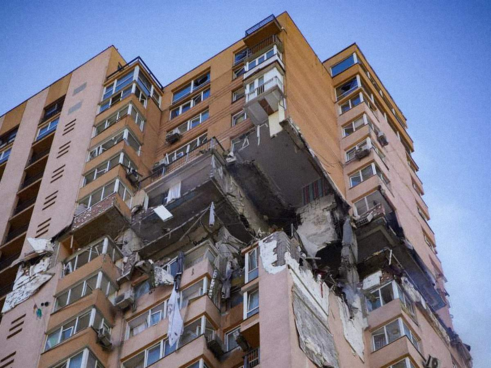

Як отримати компенсацію за пошкоджене майно
Власникам пошкодженого або знищеного житла потрібно повідомити про збитки, що завдали російські окупанти.
Можливі види компенсації:
- грошова компенсації шляхом перерахування коштів на поточний рахунок отримувача зі спеціальним цільовим режимом використання
- фінансування будівництва нового об’єкта нерухомого майна з рівноцінною площею, але що не перевищує вартості 150 м2 за кожен об’єкт (вартість 1 м2 площі об’єкта нерухомого майна розраховується за методикою, визначеною КМУ)
- фінансування виконання відновлювальних будівельних робіт пошкодженого майна
Компенсація визначається щодо кожного об’єкта нерухомого майна окремо.
Реєстрація заяви про надання компенсації здійснюється автоматично програмними засобами реєстру пошкодженого та знищеного майна. Згодом, залежно від способу, отримання компенсації заявником або подається заява про виплату коштів на картковий рахунок, або проводиться фінансування нового будівництва.
У разі протиправної відмови у здійсненні компенсації за втрачене під час війни майно або для встановлення факту смерті чи будь-яких інших необхідних фактів з метою підтвердження свого права на належну компенсацію громадяни можуть звернутися до суду.
Куди звертатися?
До працівників ЦНАП без прив‘язки до місця проживання та нотаріусів, які можуть заповнювати та подавати повідомлення від імені українців або їхніх представників.
Від нещодавна власники житлових будинків, квартир та інших житлових приміщень можуть подати заяву самостійно про знищення або пошкодження домівки внаслідок воєнних дій і просто на порталі Дія. Цією послугою можуть скористатися і працівники Центрів надання адміністративних послуг (ЦНАП) та нотаріуси. Вони допоможуть подати заяви українцям, які не мають змоги це зробити самотужки.
Нотаріуси можуть заповнювати та подавати на порталі Дія повідомлення від громадян України (їх представників), які є власниками пошкодженого або знищеного нерухомого майна внаслідок бойових дій, терористичних актів, диверсій, спричинених військовою агресією російської федерації, з моменту введення воєнного стану в Україні.
Зауважте, що вносити дані потрібно тільки про ваше власне житло.
Що це означає❔
Це означає, що інформація вноситься не повністю про зруйнований багатоквартирний будинок, а тільки вашу квартиру.
Нотаріус (або адміністратор центру надання адміністративних послуг) у день звернення особи з метою подання інформаційного повідомлення:
- встановлює особу та повноваження її представника (у разі подання інформаційного повідомлення представником);
- заповнює інформаційне повідомлення, яке формується з використанням Порталу Дія;
- роздруковує зареєстроване інформаційне повідомлення (за бажанням особи).
При цьому вхід нотаріуса на Портал Дія для подання повідомлення відбувається з використанням КЕП нотаріуса.
Послуга працює для таких видів житла:
- приватні житлові будинки, садові та дачні будинки;
- квартири, інші житлові приміщення (на які зареєстровано окреме право власності, а не в складі будинку).
Який механізм подачі заявки на порталі Дія через телефон або інший пристрій (комп‘ютер, ноутбук тощо), якщо у вас є можливість самостійно це зробити?
- Авторизуйтеся на порталі за посиланням.
- У розділі Послуги виберіть "Земля, будівництво, нерухомість" та знайдіть послугу "Пошкоджене майно".
- Заповніть форму.
- Перевірте інформацію та відправте повідомлення.
- Опісля завершення цих кроків, необхідно очікувати на інформацію про початок процедури оцінки та компенсації, що будуть визначені урядом.
Важливо: Подати заяву може тільки власник житла. Для заповнення форми потрібні дані про об‘єкт, контакти власника, і якщо є — фото та відео пошкодження.
А як це зробити в застосунку Дія на телефоні?
- Завантажте застосунок Дія або оновіть його.
- Натисніть "Послуги", "Пошкоджене майно".
- Заповніть форму, вказавши всю потрібну інформацію, а саме:
- прізвище, ім’я та по батькові;
- реєстраційний номер облікової картки платника податків або, за його відсутності, серію, номер паспорта, місце та дату його видачі;
- засоби зв’язку;
- відомості щодо пошкодженого чи знищеного об’єкту (адреса, площа та інші дані з правовстановлюючого документа (якщо такий у наявності); у разі втрати об’єкта інвестування житлового будівництва — відповідний договір;
- кількість співвласників та мешканців;
- опис пошкоджень (повне чи часткове знищення) та докази (у разі наявності), що заявник має на момент звернення: фото, акт Державної служби з надзвичайних ситуацій; витяг з ЄРДР тощо.
Заява подається на кожен об’єкт окремо. Заява, подана одним із співвласників, вважається поданою всіма співвласниками
Увага: Якщо ви вже подали заяву про пошкоджене майно в застосунку Дія, на порталі вдруге це робити вже не потрібно‼️